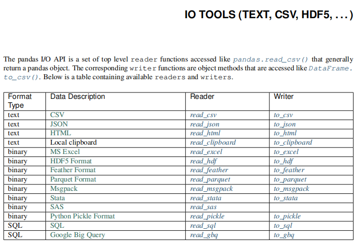

基于numpy的电信流失用户初步数据分析。
xxxxxxxxxximport numpy as npdef loadtxt(): """ 读取csv文件，返回保存所有数据的ndarray对象。 """ rows = [] with open('CustomerSurvival.csv', 'r') as f: for i, line in enumerate(f.readlines()): if i == 0: continue row = line[:-1].split(',') rows.append(tuple(row)) data = np.array(rows, dtype={ 'names':['index','pack_type','extra_time','extra_flow','pack_change', 'contract','asso_pur','group_user','use_month','loss'], 'formats':['i4', 'i4', 'f8', 'f8', 'i4', 'i4', 'i4', 'i4', 'i4', 'i4']}) return datadata = loadtxt()# 流失用户与非流失用户占比？print('-----流失用户与非流失用户占比？----------------------------')loss_data = data[data['loss']==1]unloss_data = data[data['loss']==0]print('流失用户占比：', len(loss_data) / len(data))print('非流失用户占比：', len(unloss_data) / len(data))# 有几种套餐类型？print('-----有几种套餐类型？----------------------------')pack_types = data['pack_type']pack_types = set(pack_types)print(pack_types)# 三种套餐类型样本数量占比？print('-----三种套餐类型样本数量占比？----------------------------')for pack_type in pack_types: sub_data = data[data['pack_type'] == pack_type] print(pack_type, ':', len(sub_data) / len(data), end=' ') # 统计每种套餐类型的用户中，流失与非流失用户的比例 loss, unloss = len(sub_data[sub_data['loss']==1])/len(sub_data), len(sub_data[sub_data['loss']==0])/len(sub_data) print('其中 流失用户占比:', loss, ' 非流失用户占比:', unloss)# 更改过套餐类型样本数量占比？print('-----更改过套餐类型样本数量占比？----------------------')pack_change0 = data[data['pack_change'] == 0]print('未改过套餐用户占比:', len(pack_change0) / len(data))# 统计流失与非流失用户的比例loss, unloss = len(pack_change0[pack_change0['loss']==1])/len(pack_change0), len(pack_change0[pack_change0['loss']==0])/len(pack_change0)print('其中 流失用户占比:', loss, ' 非流失用户占比:', unloss)pack_change1 = data[data['pack_change'] == 1]print('更改过套餐用户占比:', len(pack_change1) / len(data))loss, unloss = len(pack_change1[pack_change1['loss']==1])/len(pack_change1), len(pack_change1[pack_change1['loss']==0])/len(pack_change1)print('其中 流失用户占比:', loss, ' 非流失用户占比:', unloss)
Python Data Analysis Library
pandas是基于NumPy 的一种工具，该工具是为了解决数据分析任务而创建的。Pandas 纳入 了大量库和一些标准的数据模型，提供了高效地操作大型结构化数据集所需的工具。
数据结构是计算机存储、组织数据的方式。 通常情况下，精心选择的数据结构可以带来更高的运行或者存储效率。数据结构往往同高效的检索算法和索引技术有关。
Series可以理解为一个一维的数组，只是index名称可以自己改动。类似于定长的有序字典，有Index和 value。
xxxxxxxxxximport pandas as pdimport numpy as np# 创建一个空的系列s = pd.Series()# 从ndarray创建一个Seriesdata = np.array(['张三','李四','王五','赵柳'])s = pd.Series(data)s = pd.Series(data,index=['100','101','102','103'])# 从字典创建一个Seriesdata = {'100' : '张三', '101' : '李四', '102' : '王五'}s = pd.Series(data)# 从标量创建一个Seriess = pd.Series(5, index=[0, 1, 2, 3])访问Series中的数据：
xxxxxxxxxx# 使用索引检索元素s = pd.Series([1,2,3,4,5],index = ['a','b','c','d','e'])print(s[0], s[:3], s[-3:])# 使用标签检索数据print(s['a'], s[['a','c','d']])Series常用属性：
xxxxxxxxxxs1.valuess1.indexs1.dtypes1.sizes1.ndims1.shape
pandas日期类型数据处理
xxxxxxxxxx# pandas识别的日期字符串格式dates = pd.Series(['2011', '2011-02', '2011-03-01', '2011/04/01', '2011/05/01 01:01:01', '01 Jun 2011'])# to_datetime() 转换日期数据类型dates = pd.to_datetime(dates)print(dates, dates.dtype, type(dates))# 获取时间的某个日历字段的数值print(dates.dt.day)Series.dt提供了很多日期相关操作，如下：
xxxxxxxxxxSeries.dt.year The year of the datetime.Series.dt.month The month as January=1, December=12.Series.dt.day The days of the datetime.Series.dt.hour The hours of the datetime.Series.dt.minute The minutes of the datetime.Series.dt.second The seconds of the datetime.Series.dt.microsecond The microseconds of the datetime.Series.dt.week The week ordinal of the year.Series.dt.weekofyear The week ordinal of the year.Series.dt.dayofweek The day of the week with Monday=0, Sunday=6.Series.dt.weekday The day of the week with Monday=0, Sunday=6.Series.dt.dayofyear The ordinal day of the year.Series.dt.quarter The quarter of the date.Series.dt.is_month_start Indicates whether the date is the first day of the month.Series.dt.is_month_end Indicates whether the date is the last day of the month.Series.dt.is_quarter_start Indicator for whether the date is the first day of a quarter.Series.dt.is_quarter_end Indicator for whether the date is the last day of a quarter.Series.dt.is_year_start Indicate whether the date is the first day of a year.Series.dt.is_year_end Indicate whether the date is the last day of the year.Series.dt.is_leap_year Boolean indicator if the date belongs to a leap year.Series.dt.days_in_month The number of days in the month.日期运算：
xxxxxxxxxx# datetime日期运算delta = dates - pd.to_datetime('1970-01-01')print(delta, delta.dtype, type(delta))# 把时间偏移量换算成天数print(delta.dt.days)通过指定周期和频率，使用date_range()函数就可以创建日期序列。 默认情况下，频率是'D'。
xxxxxxxxxximport pandas as pd# 以日为频率datelist = pd.date_range('2019/08/21', periods=5)print(datelist)# 以月为频率datelist = pd.date_range('2019/08/21', periods=5,freq='M')print(datelist)# 构建某个区间的时间序列start = pd.datetime(2017, 11, 1)end = pd.datetime(2017, 11, 5)dates = pd.date_range(start, end)print(dates)bdate_range()用来表示商业日期范围，不同于date_range()，它不包括星期六和星期天。
xxxxxxxxxximport pandas as pddatelist = pd.bdate_range('2011/11/03', periods=5)print(datelist)DataFrame是一个类似于表格的数据类型，可以理解为一个二维数组，索引有两个维度，可更改。DataFrame具有以下特点：
xxxxxxxxxximport pandas as pd# 创建一个空的DataFramedf = pd.DataFrame()print(df)# 从列表创建DataFramedata = [1,2,3,4,5]df = pd.DataFrame(data)print(df)data = [['Alex',10],['Bob',12],['Clarke',13]]df = pd.DataFrame(data,columns=['Name','Age'])print(df)data = [['Alex',10],['Bob',12],['Clarke',13]]df = pd.DataFrame(data,columns=['Name','Age'],dtype=float)print(df)data = [{'a': 1, 'b': 2},{'a': 5, 'b': 10, 'c': 20}]df = pd.DataFrame(data)print(df)# 从字典来创建DataFramedata = {'Name':['Tom', 'Jack', 'Steve', 'Ricky'],'Age':[28,34,29,42]}df = pd.DataFrame(data, index=['s1','s2','s3','s4'])print(df)data = {'one' : pd.Series([1, 2, 3], index=['a', 'b', 'c']), 'two' : pd.Series([1, 2, 3, 4], index=['a', 'b', 'c', 'd'])}df = pd.DataFrame(data)print(df)DataFrame常用属性
| 编号 | 属性或方法 | 描述 |
|---|---|---|
| 1 | axes | 返回 行/列 标签（index）列表。 |
| 2 | columns | 返回列标签 |
| 3 | index | 返回行标签 |
| 4 | dtype | 返回对象的数据类型(dtype)。 |
| 5 | empty | 如果系列为空，则返回True。 |
| 6 | ndim | 返回底层数据的维数，默认定义：1。 |
| 7 | size | 返回基础数据中的元素数。 |
| 8 | values | 将系列作为ndarray返回。 |
| 9 | head(n) | 返回前n行。 |
| 10 | tail(n) | 返回最后n行。 |
实例代码：
xxxxxxxxxximport pandas as pddata = {'Name':['Tom', 'Jack', 'Steve', 'Ricky'],'Age':[28,34,29,42]}df = pd.DataFrame(data, index=['s1','s2','s3','s4'])df['score']=pd.Series([90, 80, 70, 60], index=['s1','s2','s3','s4'])print(df)print(df.axes)print(df['Age'].dtype)print(df.empty) print(df.ndim)print(df.size)print(df.values)print(df.head(3)) # df的前三行print(df.tail(3)) # df的后三行
列访问
DataFrame的单列数据为一个Series。根据DataFrame的定义可以 知晓DataFrame是一个带有标签的二维数组，每个标签相当每一列的列名。
xxxxxxxxxxd = {'one' : pd.Series([1, 2, 3], index=['a', 'b', 'c']), 'two' : pd.Series([1, 2, 3, 4], index=['a', 'b', 'c', 'd']), 'three' : pd.Series([1, 3, 4], index=['a', 'c', 'd'])}df = pd.DataFrame(d)print(df[df.columns[:2]])列添加
DataFrame添加一列的方法非常简单，只需要新建一个列索引。并对该索引下的数据进行赋值操作即可。
xxxxxxxxxximport pandas as pddf['four']=pd.Series([90, 80, 70, 60], index=['a', 'b', 'c', 'd'])print(df)列删除
删除某列数据需要用到pandas提供的方法pop，pop方法的用法如下：
xxxxxxxxxximport pandas as pdd = {'one' : pd.Series([1, 2, 3], index=['a', 'b', 'c']), 'two' : pd.Series([1, 2, 3, 4], index=['a', 'b', 'c', 'd']), 'three' : pd.Series([10, 20, 30], index=['a', 'b', 'c'])}df = pd.DataFrame(d)print("dataframe is:")print(df)# 删除一列： onedel(df['one'])print(df)#调用pop方法删除一列df.pop('two')print(df)行访问
如果只是需要访问DataFrame某几行数据的实现方式则采用数组的选取方式，使用 ":" 即可：
xxxxxxxxxximport pandas as pdd = {'one' : pd.Series([1, 2, 3], index=['a', 'b', 'c']), 'two' : pd.Series([1, 2, 3, 4], index=['a', 'b', 'c', 'd'])}df = pd.DataFrame(d)print(df[2:4])loc是针对DataFrame索引名称的切片方法。loc方法使用方法如下：
xxxxxxxxxximport pandas as pdd = {'one' : pd.Series([1, 2, 3], index=['a', 'b', 'c']), 'two' : pd.Series([1, 2, 3, 4], index=['a', 'b', 'c', 'd'])}df = pd.DataFrame(d)print(df.loc['b'])print(df.loc[['a', 'b']])iloc和loc区别是iloc接收的必须是行索引和列索引的位置。iloc方法的使用方法如下：
xxxxxxxxxximport pandas as pdd = {'one' : pd.Series([1, 2, 3], index=['a', 'b', 'c']), 'two' : pd.Series([1, 2, 3, 4], index=['a', 'b', 'c', 'd'])}df = pd.DataFrame(d)print(df.iloc[2])print(df.iloc[[2, 3]])行添加
xxxxxxxxxximport pandas as pddf = pd.DataFrame([['zs', 12], ['ls', 4]], columns = ['Name','Age'])df2 = pd.DataFrame([['ww', 16], ['zl', 8]], columns = ['Name','Age'])df = df.append(df2)print(df)行删除
使用索引标签从DataFrame中删除或删除行。 如果标签重复，则会删除多行。
xxxxxxxxxximport pandas as pddf = pd.DataFrame([['zs', 12], ['ls', 4]], columns = ['Name','Age'])df2 = pd.DataFrame([['ww', 16], ['zl', 8]], columns = ['Name','Age'])df = df.append(df2)# 删除index为0的行df = df.drop(0)print(df)修改DataFrame中的数据
更改DataFrame中的数据，原理是将这部分数据提取出来，重新赋值为新的数据。
xxxxxxxxxximport pandas as pddf = pd.DataFrame([['zs', 12], ['ls', 4]], columns = ['Name','Age'])df2 = pd.DataFrame([['ww', 16], ['zl', 8]], columns = ['Name','Age'])df = df.append(df2)df['Name'][0] = 'Tom'print(df)DataFrame的行级索引与列级索引都可以设置为复合索引，表示从不同的角度记录数据。
xxxxxxxxxxdata = np.floor(np.random.normal(85, 3, (6,3)))df = pd.DataFrame(data)index = [('classA', 'F'), ('classA', 'M'), ('classB', 'F'), ('classB', 'M'), ('classC', 'F'), ('classC', 'M')]df.index = pd.MultiIndex.from_tuples(index)columns = [('Age', '20+'), ('Age', '30+'), ('Age', '40+')]df.columns = pd.MultiIndex.from_tuples(columns)复合索引的访问：
xxxxxxxxxx# 访问行df.loc['classA']df.loc['classA', 'F']df.loc[['classA', 'classC']]# 访问列df.Agedf.Age['20+']df['Age']df['Age', '20+']Jupyter Notebook（此前被称为 IPython notebook）是一个交互式笔记本，支持运行 40 多种编程语言。使用浏览器作为界面，向后台的IPython服务器发送请求，并显示结果。 Jupyter Notebook 的本质是一个 Web 应用程序，便于创建和共享文学化程序文档，支持实时代码，数学方程，可视化和 markdown。
IPython 是一个 python 的交互式 shell，比默认的python shell 好用得多，支持变量自动补全，自动缩进，支持 bash shell 命令，内置了许多很有用的功能和函数。
安装Jupyter notebook
xxxxxxxxxxpip3 install jupyter -i https://pypi.tuna.tsinghua.edu.cn/simple/启动Jupyter notebook
xxxxxxxxxxjupyter notebook

读取文本：read_csv() read_table()
| 方法参数 | 参数解释 |
|---|---|
| filepath_or_buffer | 文件路径 |
| sep | 列之间的分隔符。read_csv()默认为为',', read_table()默认为'\t' |
| header | 默认将首行设为列名。header=None时应手动给出列名。 |
| names | header=None时设置此字段使用列表初始化列名。 |
| index_col | 将某一列作为行级索引。若使用列表，则设置复合索引。 |
| usecols | 选择读取文件中的某些列。设置为为相应列的索引列表。 |
| skiprows | 跳过行。可选择跳过前n行或给出跳过的行索引列表。 |
| encoding | 编码。 |
写入文本：dataFrame.to_csv()
| 方法参数 | 参数解释 |
|---|---|
| filepath_or_buffer | 文件路径 |
| sep | 列之间的分隔符。默认为',' |
| na_rep | 写入文件时dataFrame中缺失值的内容。默认空字符串。 |
| columns | 定义需要写入文件的列。 |
| header | 是否需要写入表头。默认为True。 |
| index | 会否需要写入行索引。默认为True。 |
| encoding | 编码。 |
案例：读取电信数据集。
xxxxxxxxxxpd.read_csv('../data/CustomerSurvival.csv', header=None, index_col=0)读取json：read_json()
| 方法参数 | 参数解释 |
|---|---|
| filepath_or_buffer | 文件路径 |
| encoding | 编码。 |
案例：读取电影评分数据：
xxxxxxxxxxpd.read_json('../data/ratings.json')写入json：to_json()
| 方法参数 | 参数解释 |
|---|---|
| filepath_or_buffer | 文件路径； 若设置为None，则返回json字符串 |
| orient | 设置面向输出格式：['records', 'index', 'columns', 'values'] |
案例：
xxxxxxxxxxdata = {'Name':['Tom', 'Jack', 'Steve', 'Ricky'],'Age':[28,34,29,42]}df = pd.DataFrame(data, index=['s1','s2','s3','s4'])df.to_json(orient='records')其他文件读取方法参见：https://www.pypandas.cn/docs/user_guide/io.html
$S = [s_1, s_2, ..., s_n] $
样本中的每个值都是真值与误差的和。
$mean = \frac{(s_1 + s_2 + ... + s_n) }{n}$
算数平均值表示对真值的无偏估计。
xxxxxxxxxxm = np.mean(array)m = array.mean()m = df.mean(axis=0)案例：针对电影评分数据做均值分析：
xxxxxxxxxxmean = ratings['John Carson'].mean()mean = np.mean(ratings['John Carson'])means = ratings.mean(axis=1)求平均值时，考虑不同样本的重要性，可以为不同的样本赋予不同的权重。
样本：$S = [s_1, s_2, s_3 ... s_n]$
权重：$W =[w_1, w_2, w_3 ... w_n]$
加权平均值：
代码实现：
xxxxxxxxxxa = np.average(array, weights=volumes)
案例：自定义权重，求加权平均。
xxxxxxxxxx# 加权均值w = np.array([3,1,1,1,1,1,1])np.average(ratings.loc['Inception'], weights=w)mask = ~pd.isna(ratings.loc['Inception']) np.average(ratings.loc['Inception'][mask], weights=w[mask])np.max() / np.min() / np.ptp()： 返回一个数组中最大值/最小值/极差（最大值减最小值）
xxxxxxxxxximport numpy as np# 产生9个介于[10, 100)区间的随机数a = np.random.randint(10, 100, 9)print(a)print(np.max(a), np.min(a), np.ptp(a))np.argmax() np.argmin()： 返回一个数组中最大/最小元素的下标
xxxxxxxxxxprint(np.argmax(a), np.argmin(a))print(series.idxmax(), series.idxmin())print(dataframe.idxmax(), dataframe.idxmin())np.maximum() np.minimum()： 将两个同维数组中对应元素中最大/最小元素构成一个新的数组
xxxxxxxxxxprint(np.maximum(a, b), np.minimum(a, b), sep='\n')
将多个样本按照大小排序，取中间位置的元素。
若样本数量为奇数，中位数为最中间的元素
$[1, 2000, 3000, 4000, 10000000]$
若样本数量为偶数，中位数为最中间的两个元素的平均值
$[1,2000,3000,4000,5000,10000000]$
案例：分析中位数的算法，测试numpy提供的中位数API：
xxxxxxxxxximport numpy as npclosing_prices = np.loadtxt('../../data/aapl.csv', delimiter=',', usecols=(6), unpack=True)size = closing_prices.sizesorted_prices = np.msort(closing_prices)median = (sorted_prices[int((size - 1) / 2)] + sorted_prices[int(size / 2)]) / 2print(median)median = np.median(closing_prices)print(median)频数指一组数据中各离散值出现的次数，而众数则是指一组数据中出现次数最多的值。
xxxxxxxxxxcars = np.array(['bmw', 'bmw', 'bz', 'audi', 'bz', 'bmw'])cars = pd.Series(cars)cars.value_counts()cars.mode()
所谓四分位数，即把数值由小到大排列并分成四等份，处于三个分割点位置的数值就是四分位数。
第3四分位数与第1四分位数的差距又称四分位距（InterQuartile Range,IQR）
xxxxxxxxxxary = np.array([1,1,1,2,2,2,2,2,2,2,3,3,3,3,3,3,3,3,3,3,3,3,4,4,4,4,5,5,5])s = pd.Series(ary)s.quantile([.0, .25, .5, .75, 1.])
样本（sample）：
平均值：
离差（deviation）：表示某组数据距离某个中心点的偏离程度
离差方：
总体方差（variance）：
总体标准差（standard deviation）：
样本方差：
其中，n-1称之为“贝塞尔校正”，这是因为抽取样本时候，采集的样本主要是落在中心值附近，那么通过这些样本计算的方差会小于等于对总体数据集方差的无偏估计值。为了能弥补这方面的缺陷，那么我们把公式的n改为n-1,以此来提高方差的数值。称为贝塞尔校正系数。
样本标准差：
案例： 根据标准差理论，针对评分数据进行方差分析：
xxxxxxxxxxratings.std(axis=0)
xxxxxxxxxxratings.describe()####